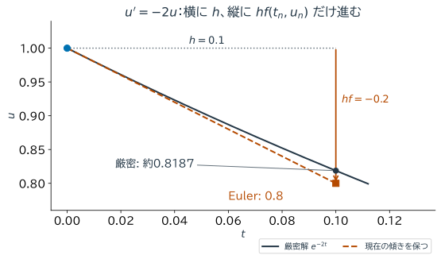
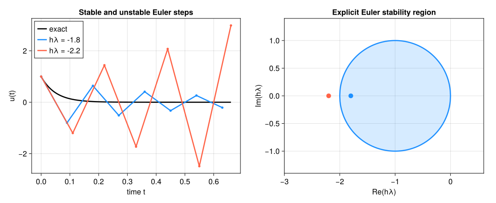

9. 常微分方程式の初期値問題#
第1章では、現在の変化率から次の値を予測するEuler法を試した。第8章の数値積分を使うと、この更新式の意味と改良の仕方が分かる。
時刻とともに変化する量 \(u(t)\) が
を満たすとする。これは常微分方程式（ordinary differential equation; ODE）の初期値問題である。人口、物体の運動、回路の電圧、化学反応の濃度など、多くのモデルがこの形に書ける。
数値解法は、連続な関数 \(u(t)\) を直接求める代わりに、離散時刻
における近似値 \(u_n\approx u(t_n)\) を順に計算する。ここで \(h\) は時間刻みである。本章の中心は、「微分方程式が示す瞬間的な変化率から、次の時刻の状態をどう予測するか」である。
本章でも、アルゴリズムを次の三つの観点から評価する。
精度：\(h\) を小さくしたとき、真の解へどの速さで近づくか。
安定性：微小な誤差や減衰成分を、不自然に増幅しないか。
計算量：所定の時間まで進むのに何ステップ、何回の \(f\) の評価が必要か。
9.1. この章の目標#
初期値問題と数値解の意味を説明できる。
Euler法を積分表示またはTaylor展開から導出できる。
1ステップの局所誤差と、一定時間後の大域誤差を区別できる。
Heun法の予測と修正を説明し、Euler法・RK4との精度と仕事量の違いを読める。
テスト方程式から絶対安定性と刻み幅制限を説明できる。
解の不変量や単調性を使って数値解を検証できる。
新製品の普及モデルのような応用問題で、解法と刻み幅を選び、結果の信頼性を説明できる。
この章で使う数学（復習）
微分方程式の解は関数である。 \(u'=-2u\) の解は数ではなく、「どの時刻でも、傾きが自分の値の \(-2\) 倍になっている関数」\(u(t)=Ce^{-2t}\) である。初期値 \(u(0)=1\) を与えると \(C=1\) に決まる。
指数関数の微分：\(\frac{d}{dt}e^{at}=ae^{at}\)。第1章で解析解を確かめたときと同じ計算である。
傾きの場：\(u'=f(t,u)\) は「時刻 \(t\) に値が \(u\) なら、そこでの傾きは \(f(t,u)\)」という指示書と読める。数値解法は、この指示に従って少しずつ進む。
9.2. 初期値が未来を定める#
微分方程式 \(u'=f(t,u)\) は、時刻 \(t\) と現在の状態 \(u\) から、その瞬間の傾きが \(f(t,u)\) であると指定する。さらに出発点 \(u(t_0)=u_0\) を与えることで、未来の軌道が定まる。
積分の形に書けば
である。したがってODEを1ステップ進める問題は、右辺の積分をどう近似するかという第8章の数値積分の問題でもある。
たとえば放射性崩壊や単純な冷却を表す
の厳密解は \(u(t)=e^{-2t}\) である。解は正のまま単調に減少する。この「正値性」と「単調減少」は厳密解を知らない場合にも使える検証材料になる。
\(f\) が時刻 \(t\) について連続で、状態 \(u\) について局所的にLipschitz連続（例えば連続微分可能）なら、初期値の近くで解の存在と一意性が保証される。数値解法の収束解析ではこのような仮定を置く。右辺が不連続、あるいは一意性を失う問題では、数値計算以前に「どの解を求めるか」を確認する必要がある。
9.3. Euler法：現在の傾きで一歩進む#
区間 \([t_n,t_{n+1}]\) で傾きを左端の値 \(f(t_n,u_n)\) に固定して積分を近似すると、
となる。したがって前進Euler法は
である。Taylor展開
で \(u'=f(t,u)\) を代入しても同じ式が得られる。
\(u'=-2u\)、\(h=0.1\) なら \(u_{n+1}=(1-0.2)u_n=0.8u_n\) である。\(u_0=1\) から \(u_1=0.8\)、\(u_2=0.64\) と進む。各ステップは単純だが、\(t=1\) までに10回の近似が積み重なる。


図 9.1 青い丸が出発点、橙色の四角がEuler法の次の値。横の移動 \(h=0.1\) に、縦の変化 \(h f(0,1)=-0.2\) を組み合わせる。接線上を進んだ点と黒い曲線の差が、この一歩で生じる誤差である。#
function euler(f, tspan, u0, h)
t0, T = tspan
T > t0 && h > 0 || error("T > t0かつh > 0が必要です")
nsteps = ceil(Int, (T-t0)/h)
h = (T-t0)/nsteps # 最後がちょうどTになるよう刻み幅を調整
t = collect(range(t0, T, length=nsteps+1))
u = Vector{typeof(float(u0))}(undef, nsteps+1)
u[1] = u0
for n in 1:nsteps
u[n+1] = u[n]+h*f(t[n], u[n])
end
return t, u
end
decay(t, u) = -2u
decay_exact(t) = exp(-2t)
t, u = euler(decay, (0.0, 1.0), 1.0, 0.1)
for n in 1:4
println("t=$(t[n]): 数値解=$(u[n]), 厳密解=$(decay_exact(t[n]))")
end
println("t=1での誤差 = ", abs(u[end]-decay_exact(1.0)))
t=0.0: 数値解=1.0, 厳密解=1.0
t=0.1: 数値解=0.8, 厳密解=0.8187307530779818
t=0.2: 数値解=0.64, 厳密解=0.6703200460356393
t=0.3: 数値解=0.512, 厳密解=0.5488116360940265
t=1での誤差 = 0.02796110083661267
9.4. 局所誤差と大域誤差#
真の値 \(u(t_n)\) から1ステップだけEuler法を行ったときのずれ
をここでは1ステップの局所離散化誤差と呼ぶ。Taylor展開より \(d_{n+1}=O(h^2)\) である。一方、初期時刻から数値解を繰り返して得た
が大域誤差である。一定の時間区間では約 \(1/h\) 回のステップを行うため、各ステップの誤差が安定に蓄積すると大域誤差は \(O(h)\) になる。
文献によっては \(d_{n+1}\) を \(h\) で割った量を局所離散化誤差と呼び、その次数を \(O(h)\) と記す。本資料では、1ステップ後の値のずれそのものを指して \(O(h^2)\) とする。定義を確認すれば内容は同じである。
次数を実験で調べるには、\(h\) と \(h/2\) の誤差 \(E_h,E_{h/2}\) から
を計算する。\(E_h\approx Ch^p\) なら \(p_{\mathrm{obs}}\approx p\) となる。
let previous_error = nothing
for h in (0.2, 0.1, 0.05, 0.025)
_, values = euler(decay, (0.0, 1.0), 1.0, h)
error = abs(values[end]-decay_exact(1.0))
order = isnothing(previous_error) ? "---" : string(round(log2(previous_error/error), digits=3))
println("h=$h: 終点誤差=$(round(error,sigdigits=5)), 観測次数=$order")
previous_error = error
end
end
h=0.2: 終点誤差=0.057575, 観測次数=---
h=0.1: 終点誤差=0.027961, 観測次数=1.042
h=0.05: 終点誤差=0.013759, 観測次数=1.023
h=0.025: 終点誤差=0.0068231, 観測次数=1.012
9.5. Heun法：区間の両端の傾きを使う#
Euler法は区間の始点の傾きだけを使う。まずEuler法で終点を予測し、始点と予測終点の傾きを平均すれば、積分に台形則を使うことに対応する。
例えば \(u'=-2u\)、\(u_n=1\)、\(h=0.1\) なら、最初の傾きは \(-2\)、予測値は0.8、そこでの傾きは \(-1.6\) となる。平均の傾き \(-1.8\) を使うと、修正後は0.82であり、厳密値 \(e^{-0.2}\approx0.8187\) に近づく。未来の厳密な傾きを知っているのではなく、予測値で代用している。
これはHeun法または改良Euler法と呼ばれる2次Runge--Kutta法で、大域誤差は \(O(h^2)\) である。1ステップで右辺 \(f\) を2回評価するが、同じ精度を得るためにEuler法より大きな刻み幅を使えることが多い。計算量は「1ステップの安さ」だけでなく「必要なステップ数」と合わせて比較する。
function heun(f, tspan, u0, h)
t0, T = tspan
T > t0 && h > 0 || error("T > t0かつh > 0が必要です")
nsteps = ceil(Int, (T-t0)/h)
h = (T-t0)/nsteps
t = collect(range(t0, T, length=nsteps+1))
u = Vector{typeof(float(u0))}(undef, nsteps+1)
u[1] = u0
for n in 1:nsteps
k1 = f(t[n], u[n])
predictor = u[n]+h*k1
k2 = f(t[n]+h, predictor)
u[n+1] = u[n]+h*(k1+k2)/2
end
return t, u
end
let previous_error = nothing
for h in (0.2, 0.1, 0.05, 0.025)
_, values = heun(decay, (0.0, 1.0), 1.0, h)
error = abs(values[end]-decay_exact(1.0))
order = isnothing(previous_error) ? "---" : string(round(log2(previous_error/error), digits=3))
println("h=$h: Heun法の誤差=$(round(error,sigdigits=5)), 観測次数=$order")
previous_error = error
end
end
h=0.2: Heun法の誤差=0.010058, 観測次数=---
h=0.1: Heun法の誤差=0.0021127, 観測次数=2.251
h=0.05: Heun法の誤差=0.00048717, 観測次数=2.117
h=0.025: Heun法の誤差=0.00011714, 観測次数=2.056
9.6. 4次Runge--Kutta法：区間内の傾きを組み合わせる#
Heun法では2回の傾きを使った。より多くの途中の状態を予測する例が、古典的4次Runge--Kutta法（RK4）である。RK4は、始点、二つの中点予測、終点予測における傾きを組み合わせる。
係数 \(1,2,2,1\) は単なる傾きの平均ではなく、Taylor展開の項が4次まで一致するように選ばれている。十分滑らかな問題では局所誤差は \(O(h^5)\)、一定時間後の大域誤差は \(O(h^4)\) である。1ステップで \(f\) を4回評価する。
function rk4(f, tspan, u0, h)
t0, T = tspan
T > t0 && h > 0 || error("T > t0かつh > 0が必要です")
nsteps = ceil(Int, (T-t0)/h)
h = (T-t0)/nsteps
t = collect(range(t0, T, length=nsteps+1))
u = Vector{typeof(float(u0))}(undef, nsteps+1)
u[1] = u0
for n in 1:nsteps
k1 = f(t[n], u[n])
k2 = f(t[n]+h/2, u[n]+h*k1/2)
k3 = f(t[n]+h/2, u[n]+h*k2/2)
k4 = f(t[n]+h, u[n]+h*k3)
u[n+1] = u[n]+h*(k1+2k2+2k3+k4)/6
end
return t, u
end
let previous_error = nothing
for h in (0.2, 0.1, 0.05, 0.025)
_, values = rk4(decay, (0.0, 1.0), 1.0, h)
error = abs(values[end]-decay_exact(1.0))
order = isnothing(previous_error) ? "---" : string(round(log2(previous_error/error), digits=3))
println("h=$h: RK4の誤差=$(round(error,sigdigits=5)), 観測次数=$order")
previous_error = error
end
end
h=0.2: RK4の誤差=8.0731e-5, 観測次数=---
h=0.1: RK4の誤差=4.2652e-6, 観測次数=4.242
h=0.05: RK4の誤差=2.4519e-7, 観測次数=4.121
h=0.025: RK4の誤差=1.4698e-8, 観測次数=4.06
9.7. 精度と仕事量を一緒に見る#
解法 |
\(f\) の評価回数/ステップ |
大域誤差 |
特徴 |
|---|---|---|---|
前進Euler法 |
1 |
\(O(h)\) |
最も単純で、考え方の基準になる |
Heun法 |
2 |
\(O(h^2)\) |
予測値を使って傾きを補正する |
古典的RK4 |
4 |
\(O(h^4)\) |
滑らかな問題で高精度を得やすい |
十分小さな \(h\) で理論次数が現れる範囲では、高次法は誤差を速く減らせるが、1ステップが高価である。また関数が滑らかでなければ、理論どおりの高次精度が現れないこともある。所要精度までの総関数評価回数、メモリ、安定性を含めて比較する。
実装の正しさを調べるときは、最初から複雑なモデルを使わない。厳密解の分かる \(u'=\lambda u\) で観測次数を確認し、その後に目的の問題へ進む。この段階的検証は偏微分方程式のソルバーにも引き継がれる。
9.8. 絶対安定性：減衰する解を数値的にも減衰させる#
第4章の安定性は計算手順による誤差の増幅を考えた。ここではさらに、時間刻みを固定して何度も更新した際の増幅を調べる。この絶対安定性は、浮動小数点演算の後退安定性とは異なる判定である。標準的なテスト方程式
の厳密解は減衰する。前進Euler法を適用すると
なので、1ステップの増幅率は \(R(z)=1+z\)、\(z=h\lambda\) である。数値解も減衰するための条件は
である。\(\lambda<0\) が実数なら \(0<h<-2/\lambda\) となる。実数 \(\lambda<0\) で上限を超えると、真の解は減衰するのに数値解は振動しながら増大する。境界 \(h=-2/\lambda\) では符号が交互に変わり、大きさは減らない。
安定であることは高精度であることを意味しない。 安定領域内でも \(h\) が大きければ位相や振幅の誤差は大きい。また高次法にも、それぞれ異なる安定領域がある。
λ = -20.0
for h in (0.05, 0.09, 0.11)
amplification = 1+h*λ
values = amplification .^ (0:20)
println("h=$h: 増幅率=$amplification, u_20=$(values[end]), " *
"安定条件=$(abs(amplification) < 1)")
end
h=0.05: 増幅率=0.0, u_20=0.0, 安定条件=true
h=0.09: 増幅率=-0.7999999999999998, u_20=0.011529215046068419, 安定条件=true
h=0.11: 増幅率=-1.2000000000000002, u_20=38.337599924474866, 安定条件=false
Show code cell source
# 初回のみ: import Pkg; Pkg.add("CairoMakie")
using CairoMakie
CairoMakie.activate!(type="svg")
set_theme!(Theme(fontsize=16, linewidth=2.5))
figure_dir = isdir("pic") ? "pic" : joinpath("..", "pic")
λ_stability = -20.0
u0_stability = 1.0
T_stability = 0.66
function euler_test_solution(λ, u0, T, h)
nsteps = floor(Int, T/h)
t = collect(0:nsteps) .* h
return t, u0 .* (1+h*λ).^(0:nsteps)
end
t_stable, u_stable = euler_test_solution(λ_stability, u0_stability, T_stability, 0.09)
t_unstable, u_unstable = euler_test_solution(λ_stability, u0_stability, T_stability, 0.11)
t_exact_ode = range(0.0, T_stability, length=500)
fig_ode_stability = Figure(size=(1050, 430))
ax_solution = Axis(fig_ode_stability[1, 1]; xlabel="time t", ylabel="u(t)",
title="Stable and unstable Euler steps")
lines!(ax_solution, t_exact_ode, exp.(λ_stability .* t_exact_ode);
color=:black, label="exact")
lines!(ax_solution, t_stable, u_stable; color=:dodgerblue, label="hλ = -1.8")
scatter!(ax_solution, t_stable, u_stable; color=:dodgerblue, markersize=7)
lines!(ax_solution, t_unstable, u_unstable; color=:tomato, label="hλ = -2.2")
scatter!(ax_solution, t_unstable, u_unstable; color=:tomato, markersize=7)
axislegend(ax_solution; position=:lt)
ax_region = Axis(fig_ode_stability[1, 2]; xlabel="Re(hλ)", ylabel="Im(hλ)",
title="Explicit Euler stability region", aspect=DataAspect())
x_region = range(-2.0, 0.0, length=400)
y_region = sqrt.(max.(0.0, 1 .- (x_region .+ 1).^2))
band!(ax_region, x_region, -y_region, y_region; color=(:dodgerblue, 0.18))
lines!(ax_region, x_region, y_region; color=:dodgerblue)
lines!(ax_region, x_region, -y_region; color=:dodgerblue)
scatter!(ax_region, [-1.8], [0.0]; color=:dodgerblue, markersize=14)
scatter!(ax_region, [-2.2], [0.0]; color=:tomato, markersize=14)
xlims!(ax_region, -3.0, 0.6)
ylims!(ax_region, -1.4, 1.4)
save(joinpath(figure_dir, "ode_euler_stability.svg"), fig_ode_stability)
fig_ode_stability


図 9.2 左では解析解が減衰するにもかかわらず、\(h\lambda=-2.2\) の数値解が振動しながら増幅する。本文と同じ \(\lambda=-20\) を用い、安定側の \(h=0.09\) でも符号の交代が起こる。右の円の内部は \(|1+h\lambda|<1\) を満たして減衰し、円周では大きさが一定になる。#
9.9. 数値解の形をモデルの性質と照合する#
厳密解がなくても、モデルから分かる性質を検証に使える。たとえばロジスティック方程式
は \(u=0,K\) を平衡点に持つ。\(0<u_0<K\) なら厳密解は正のまま単調に増え、\(K\) に近づく。数値解が負になる、\(K\) の周りで大きく振動する、遠ざかる、といった挙動は刻み幅が大きすぎる兆候である。
保存系では、不変量も有力な検証量になる。調和振動子
をまとめて \(u=(q,p)^T\) と置けば、右辺もベクトル \((p,-q)^T\) になる。状態が一つの数から配列へ変わるだけで、同じ時間更新を使える。このモデルではエネルギー \(E=(q^2+p^2)/2\) が一定である。各成分のグラフが自然に見えても、長時間でエネルギーが系統的に増減する場合がある。状態だけでなく、モデルが保存または散逸すると予想する量も記録する。
function rk4_system(f, tspan, u0, h)
t0, T = tspan
T > t0 && h > 0 || error("T > t0かつh > 0が必要です")
nsteps = ceil(Int, (T-t0)/h)
h = (T-t0)/nsteps
t = collect(range(t0, T, length=nsteps+1))
u = Vector{Vector{Float64}}(undef, nsteps+1)
u[1] = float.(copy(u0))
for n in 1:nsteps
k1 = f(t[n], u[n])
k2 = f(t[n]+h/2, u[n]+h*k1/2)
k3 = f(t[n]+h/2, u[n]+h*k2/2)
k4 = f(t[n]+h, u[n]+h*k3)
u[n+1] = u[n]+h*(k1+2k2+2k3+k4)/6
end
return t, u
end
oscillator(t, u) = [u[2], -u[1]]
tosc, uosc = rk4_system(oscillator, (0.0, 20π), [1.0, 0.0], 0.05)
energies = [(u[1]^2+u[2]^2)/2 for u in uosc]
println("初期エネルギー = $(energies[1])")
println("最大エネルギー誤差 = $(maximum(abs.(energies .- energies[1])))")
println("10周期後の状態 = $(uosc[end])")
初期エネルギー = 0.5
最大エネルギー誤差 = 1.3611456922690834e-7
10周期後の状態 = [0.9999998638800888, 3.2657976855310356e-6]
9.10. 応用例：新製品の普及を予測する#
マーケティングでよく使われるBassモデルは、新製品を採用した人の割合 \(F(t)\)（\(0\le F\le1\)）が
に従うと仮定する。\(1-F\) はまだ採用していない人の割合である。そのうち、広告などの外部の情報で採用する人の割合が \(p\)（革新者係数）、すでに採用した人からの口コミで採用する人の割合が \(qF\)（模倣者係数）に比例する。\(p\) だけなら第1章のような単純な増え方だが、\(qF\) の項があるため、採用者が増えるほど普及が加速し、やがて未採用者が減って頭打ちになる。
このモデルには解析解
があるので、数値解法の誤差を確かめられる。以下では、耐久消費財でよく報告される程度の値として \(p=0.03\)、\(q=0.38\)（時間の単位は年）を使う。年次の販売データに合わせて \(h=1\) 年で計算したくなるが、その刻みで十分だろうか。実行前に、Euler法の \(h=1\) の誤差がおよそどの程度になるか予想してみよう。
p_bass, q_bass = 0.03, 0.38 # 革新者係数（広告など）、模倣者係数（口コミ）
bass(t, F) = (p_bass + q_bass*F)*(1 - F)
bass_exact(t) = (1 - exp(-(p_bass+q_bass)*t)) / (1 + (q_bass/p_bass)*exp(-(p_bass+q_bass)*t))
for (name, method) in (("Euler", euler), ("Heun", heun), ("RK4", rk4))
for h in (1.0, 0.5)
tb, Fb = method(bass, (0.0, 15.0), 0.0, h)
max_error = maximum(abs.(Fb .- bass_exact.(tb)))
println(rpad(name, 6), " h=$h: 最大誤差 = ", round(max_error, sigdigits=3),
", 右辺の評価回数 = ", (name == "Euler" ? 1 : name == "Heun" ? 2 : 4)*(length(tb)-1))
end
end
# 普及の速さ（新規採用者の割合）が最大になる時刻
tb, Fb = rk4(bass, (0.0, 15.0), 0.0, 0.01)
rates = [bass(t, F) for (t, F) in zip(tb, Fb)]
println("数値解から読んだピーク時刻 ≈ ", tb[argmax(rates)], " 年")
println("理論値 log(q/p)/(p+q) = ", round(log(q_bass/p_bass)/(p_bass+q_bass), digits=3), " 年")
Euler h=1.0: 最大誤差 = 0.0714, 右辺の評価回数 = 15
Euler h=0.5: 最大誤差 = 0.036, 右辺の評価回数 = 30
Heun h=1.0: 最大誤差 = 0.00818, 右辺の評価回数 = 30
Heun h=0.5: 最大誤差 = 0.00224, 右辺の評価回数 = 60
RK4 h=1.0: 最大誤差 = 4.22e-5, 右辺の評価回数 = 60
RK4 h=0.5: 最大誤差 = 2.92e-6, 右辺の評価回数 = 120
数値解から読んだピーク時刻 ≈ 6.19 年
理論値 log(q/p)/(p+q) = 6.193 年
\(h=1\) 年のEuler法では、採用割合に最大で約0.07（7ポイント）の誤差が出る。市場規模が100万世帯なら約7万世帯分のずれであり、需要予測としては無視できない。一方、RK4は同じ \(h=1\) でも誤差が \(10^{-4}\) 以下である。右辺の評価回数あたりで比べても、RK4（60回で約 \(4\times10^{-5}\)）は、Euler法を細かくする（30回で約0.036）より効率がよい。
普及の速さ \(F'(t)\) が最大になる時刻（販売のピーク）は、解析解から \(t^*=\log(q/p)/(p+q)\approx6.19\) 年と求まり、細かい刻みの数値解から読んだ値と一致する。
ただし、ここで確かめたのはモデルの方程式に対する数値誤差である。実際の販売データに対しては、\(p,q\) をデータから推定する誤差（第6章の最小二乗法や第7章の非線形方程式の知識が使える）や、そもそもモデルの仮定が成り立つか（競合製品、価格の変化など）というモデル誤差のほうが大きいことが多い。第1章で区別した誤差の種類を、応用問題でも意識しよう。
9.11. \(\clubsuit\) 硬い（stiff）問題と陰的解法#
例えばゆっくり変化する温度を追いたいのに、モデルにはすぐ消える非常に速い成分も含まれているとしよう。解の中に非常に速く減衰する成分とゆっくり変化する成分が共存すると、前進Euler法などの陽解法は、精度上必要な値よりはるかに小さな \(h\) を安定性のためだけに要求される。このような問題を硬い問題（stiff問題） という。
後退Euler法は
と、未知の次ステップの右辺を使う陰的解法である。テスト方程式では
となる。\(\operatorname{Re}\lambda<0\) なら任意の \(h>0\) に対して増幅率の絶対値が1未満であり、後退Euler法はA安定である。
代わりに、一般の非線形 \(f\) では各ステップで
を解かなければならない。ここで第7章のNewton法が必要になる。大規模な連立ODEではJacobianを含む線形方程式が主な計算コストとなる。安定性の向上は、1ステップ当たりの仕事量との交換条件で得られる。
λstiff = -20.0
h = 0.2
nsteps = 5
forward_values = (1+h*λstiff) .^ (0:nsteps)
backward_values = (1/(1-h*λstiff)) .^ (0:nsteps)
exact_values = exp.(λstiff*h .* (0:nsteps))
println("前進Euler法 = ", forward_values)
println("後退Euler法 = ", backward_values)
println("厳密解 = ", exact_values)
println("後退Euler法は安定だが、このhでは精度が高いわけではない")
前進Euler法 = [1.0, -3.0, 9.0, -27.0, 81.0, -243.0]
後退Euler法 = [1.0, 0.2, 0.04000000000000001, 0.008000000000000002, 0.0016000000000000003, 0.0003200000000000001]
厳密解 = [1.0, 0.01831563888873418, 0.00033546262790251185, 6.14421235332821e-6, 1.1253517471925912e-7, 2.061153622438558e-9]
後退Euler法は安定だが、このhでは精度が高いわけではない
9.12. \(\clubsuit\) 局所誤差推定と刻み幅制御#
一定刻み幅では、解が急変する区間に合わせて全区間を細かくすると無駄が多い。実用的なソルバーは、次数の異なる二つの近似、または1ステップと半分の2ステップの差から局所誤差を推定する。
\(p\) 次法の局所誤差推定値を err、利用者が指定する許容値を tol とすると、概念的には
のように次の刻み幅を決める。err > tol ならステップを棄却して小さな \(h\) でやり直し、十分小さければステップを採用する。実装では絶対許容誤差と相対許容誤差を
のように組み合わせ、成分ごとのスケール差にも対応する。
許容誤差は大域誤差そのものの保証ではない。また不連続点、途中で条件が切り替わる出来事（イベント）、硬さ（stiffness）がある場合は、誤差制御だけでなく問題に適したソルバーの選択が必要である。
9.13. まとめ#
本章のまとめ
Euler法は現在の傾き、Heun法は予測を使った二つの傾き、RK4は四つの傾きを利用する。滑らかな問題での大域精度は、それぞれ1次・2次・4次である。1回の誤差と、一定時刻まで積み重なった誤差を区別しよう。
検証では、初期値・最終時刻をそろえ、刻みを半分にした結果を比べる。さらに、モデルが持つ正値性・単調性・保存量を確認する。安定な更新でも精度が不足することはあり、刻みの選択には両方の観点が必要である。
掲載関数では最終時刻に合わせて刻み幅を調整するため、実際の刻みは戻り値の時刻配列から確認できる。
ここまでが講義の中心となる基本アルゴリズムである。次の第10章「連立一次方程式の反復法」からは、大規模な連立一次方程式の解法、行列の固有方向・低次元表現・確率的な計算へ応用を広げる。
9.14. 演習#
本文の式・表・出力を使って説明してよい。
演習
予測と修正：\(u'=-2u\)、\(u_0=1\)、\(h=0.1\) で、Euler法とHeun法をそれぞれ1ステップ行え。Heun法が平均する二つの傾きは、どの状態で評価したものか。
誤差と仕事量：本文の表から、刻みを半分にしたときEuler法・Heun法・RK4の誤差が概ね何分の1になるか読め。同じ時間区間では、各方法の関数評価回数はそれぞれ何倍になるか。
減衰を確かめる：\(u'=-20u\) にEuler法を使う。\(h=0.09\) と \(h=0.11\) で増幅率 \(1-20h\) を求め、値の符号と大きさがどう変わるか説明せよ。大きさが減る場合にも、厳密解の正値性は保たれているか。
普及モデルの検証：Bassモデルで \(q=0\) とすると、方程式と解析解はどうなるか。\(F'=p(1-F)\) を第1章の減衰の式と比べ、数値解がどのような性質（単調性、上限1を超えないか）を満たすべきか述べよ。次に、\(p=0.03\) としてEuler法で \(h=1,20,40\)（最終時刻は120年）としたとき、その性質が保たれるか計算で確かめよ。結果を、第1章で求めた「非負で単調」となる \(h\lambda\) の範囲と結びつけて説明せよ。
探究：感染や口コミの広がり：人口を「未感染 \(S\)」「感染中 \(I\)」「回復 \(R\)」の割合に分けるSIRモデル \(S'=-\beta SI\)、\(I'=\beta SI-\gamma I\)、\(R'=\gamma I\) を、本文の
rk4_systemで解け（例えば \(\beta=0.5\)、\(\gamma=0.1\)、\(S(0)=0.99\)、\(I(0)=0.01\)、\(R(0)=0\)、時間の単位は日）。厳密解は分からないが、どのような量や性質を使えば数値解を検証できるか（ヒント：\(S+I+R\)、各変数の符号、刻みを半分にしたときの変化）を自分で三つ以上挙げ、実際に確かめよ。さらに、感染者のピークの時刻と高さが、刻み幅や \(\beta,\gamma\) にどれだけ敏感かを調べ、「この予測値はどの程度信頼できるか」を一段落で述べよ。
9.15. 参考文献と関連する節#
Driscoll and Braun, Fundamentals of Numerical Computation, Initial-value problems for ODEs.